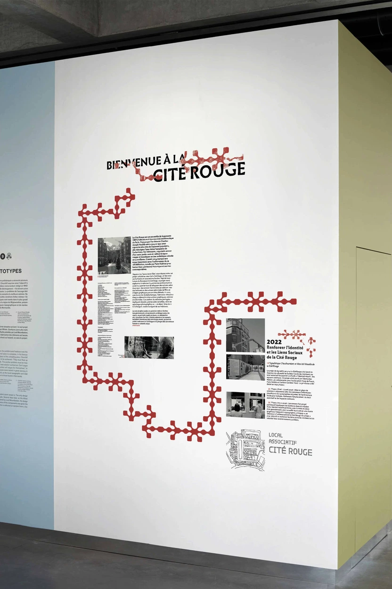
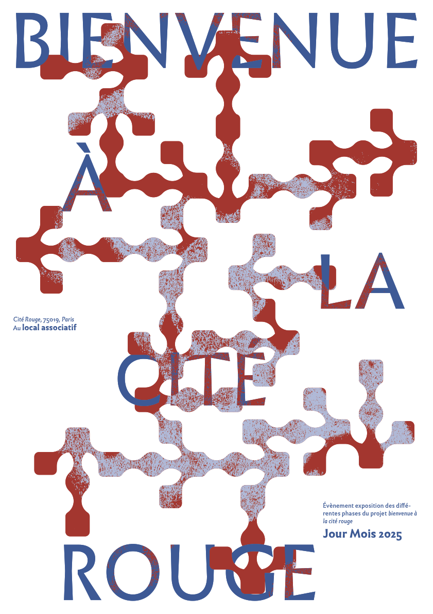
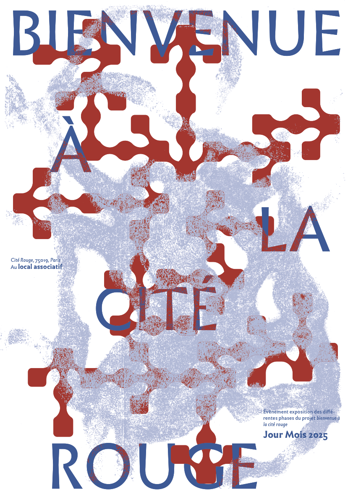
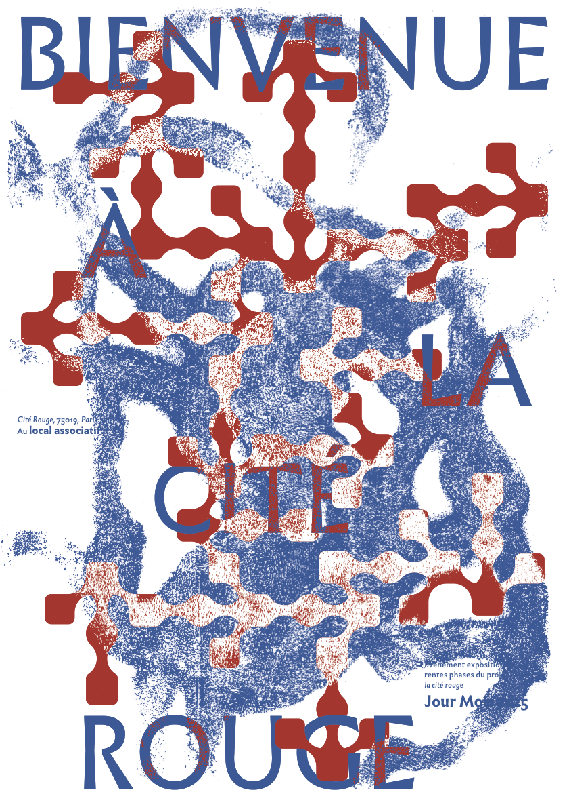

BIENVENUE À LA CITÉ ROUGE
Identité Visuelle, Scénographie
Contexte : Stage chez Fabrication Maison
Lieu : La Cité Rouge, Paris 19e
Dans le cadre d'un stage de deuxième année, l'ensemble de notre promotion a été accueilli par le collectif Fabrication Maison afin de participer à la clôture de leur projet à la Cité Rouge, dans le 19ème arrondissement de Paris. L'objectif était de concevoir l'identité visuelle et la scénographie d'un événement de restitution retraçant les nombreuses interventions menées par le collectif au cœur du quartier.
Pour répondre à cette demande, nous avons travaillé en groupe sur la création des supports de communication, notamment les affiches et les flyers. Parallèlement à ce travail sur le support papier, nous avons conçu une scénographie centrée sur l’interactivité et la participation collective.
La phase de recherche a été guidée par l'architecture singulière et l'histoire humaine de la Cité Rouge. Nous avons exploré des motifs inspirés de la structure des bâtiments et de la couleur dominante du quartier pour créer un système graphique modulaire.
Les croquis et scans présentent les premières pistes de médiation culturelle : comment transformer des archives en objets tangibles et ludiques ? Le travail sur la typographie et les motifs visait à créer une identité qui soit à la fois institutionnelle pour le collectif et chaleureuse pour les habitants.





